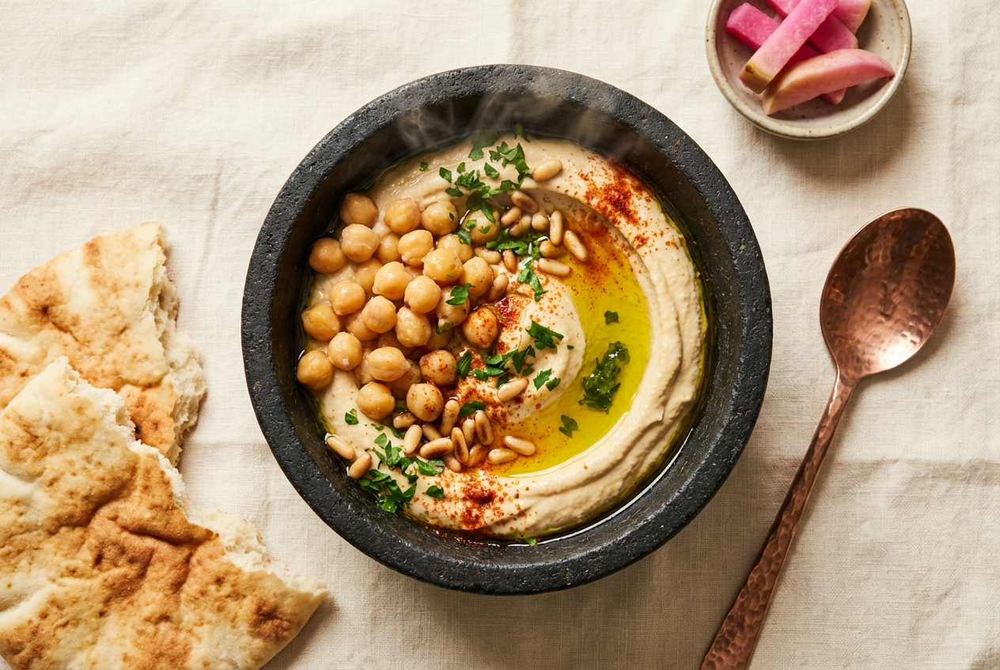
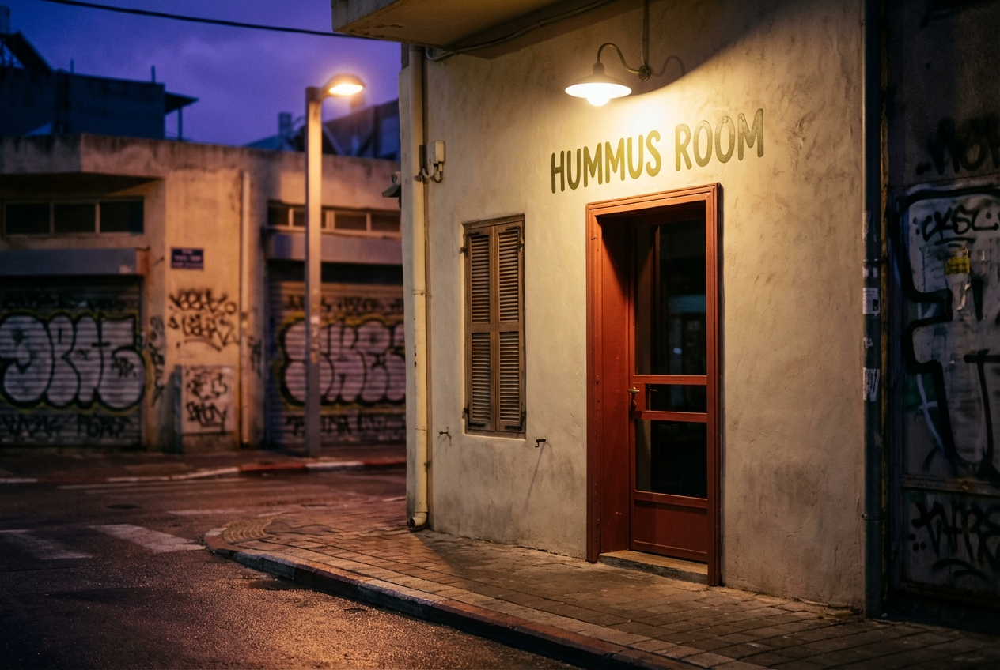
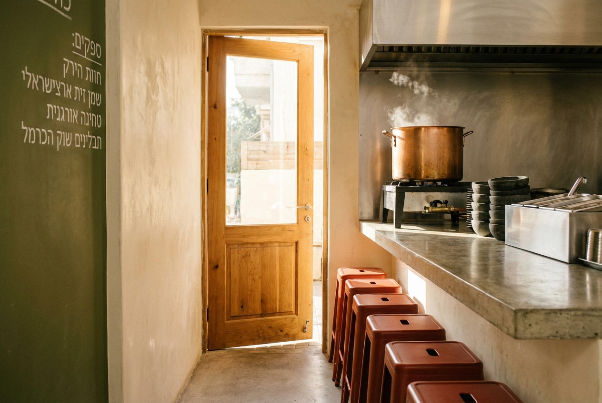
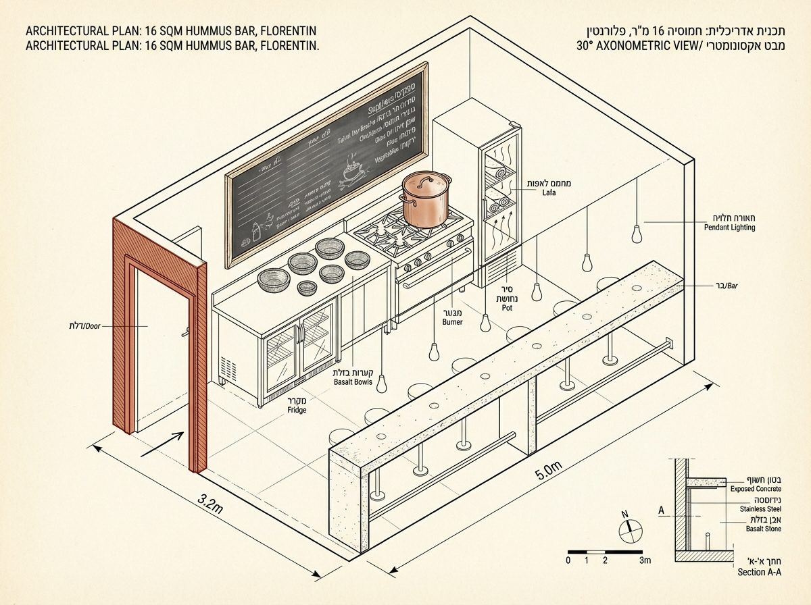
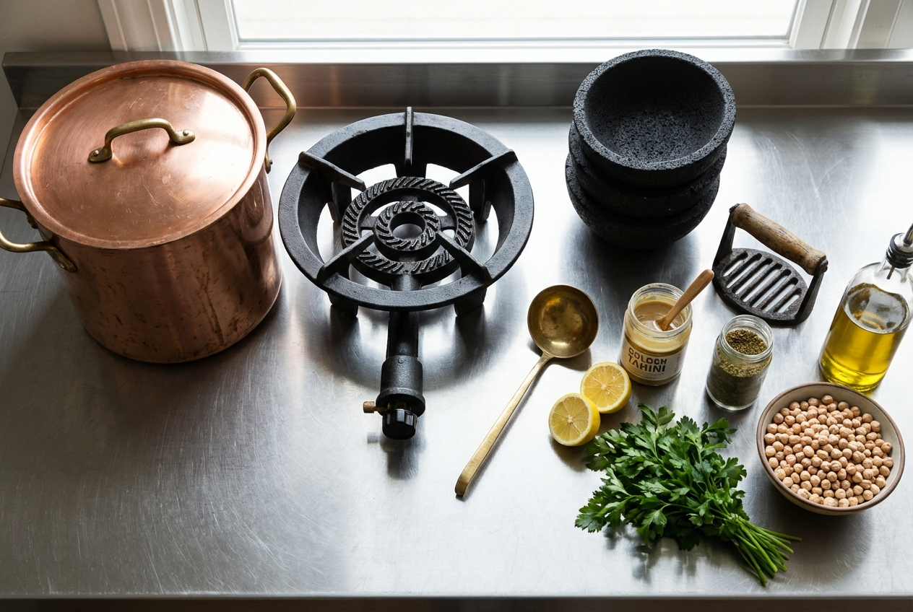
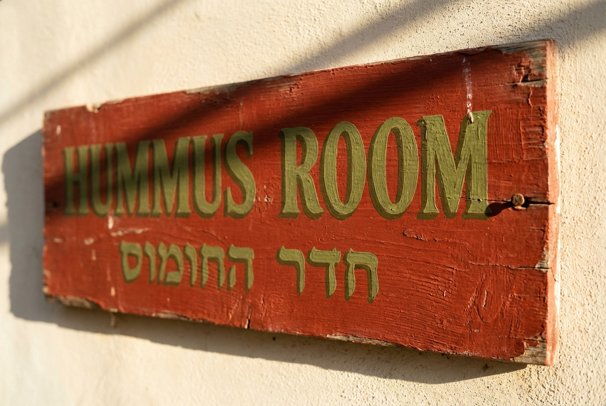
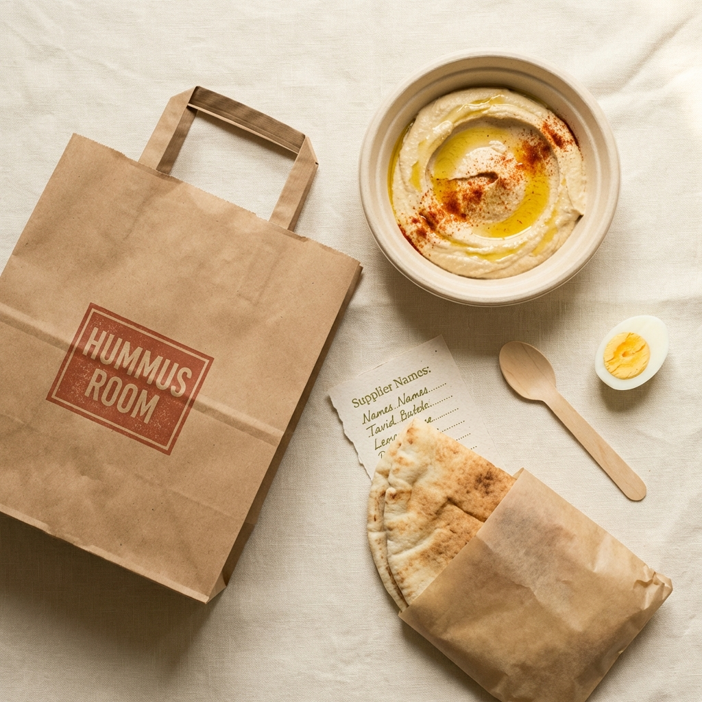
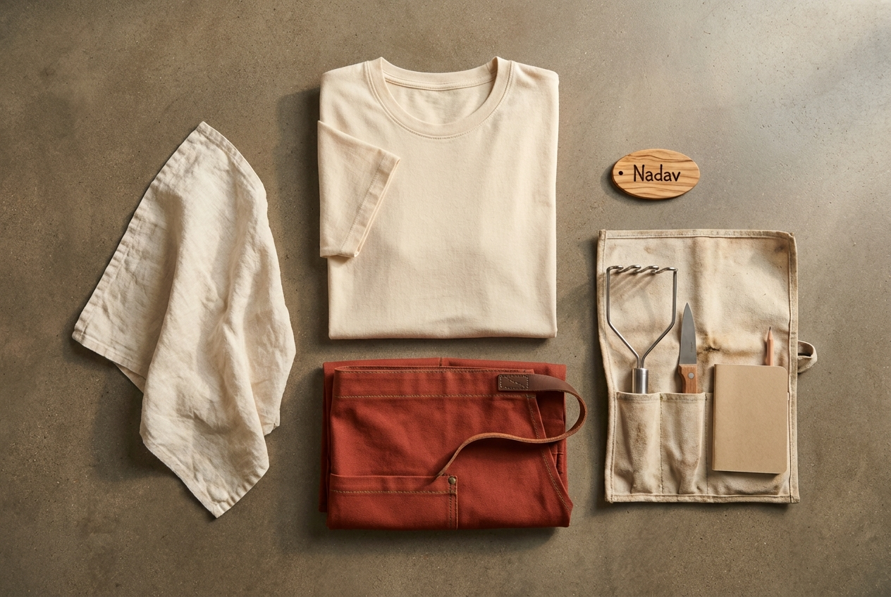

Tel Aviv Hummus Room is a 16 m² morning-only hummus bar in Florentin, south Tel Aviv, serving four warm bowls on volcanic stone slabs between 07:00 and 14:00. The pot goes on at 05:30, the doors open at 07:00, and when the copper pot is empty the bar closes — usually by 14:00, sometimes by noon. No evening service, no delivery, no freezer. Launches within 5 weeks for €14,800 (~₪58,500).
Tel Aviv has dozens of hummus institutions — Abu Hassan, Ali Karavan, Shlomo & Doron, Pinati — and all of them share the same DNA: warm chickpeas, one morning pot, doors close at empty. The formula works. Tel Aviv Hummus Room brings that discipline to a 16 m² bar in Florentin, the neighbourhood that turned in the last decade from mechanics' shops into the city's design district and still reads working-class at breakfast.
No menu printing, no seasonal rotation, no delivery integration. Four bowls: Masabaha (warm whole chickpeas with tahini), Hummus (classic smooth), Ful (fava beans), Pitriyot (mushroom & za'atar). Each bowl served on volcanic basalt, with lafa baked off-site by a named baker in Hatikva, a dish of pickled vegetables, a halved hard-boiled egg, a cup of sweet black tea. The operation ends when the pot does.

The bar opens Sunday through Friday at 07:00. When the copper pot is scraped clean, the door closes — no exceptions, no "we'll whip up more," no freezer reserve. Saturday closed. This is the whole business model.
Role: Electrician, second-generation Florentin resident
Lifestyle: Out of the house by 06:45, breakfast before site, rarely eats dinner out
Why he buys: Close to home, warm at 07:15, costs less than 40 shekels, no chair required — eats standing at the bar.
Ticket: ₪38 / €9.60 · Frequency: 4×/week
Role: UX designer, lives Rothschild, works Sarona
Lifestyle: Tracks food on Instagram, photographs the bowl before eating
Why she buys: The discipline is the story — a bar that closes at empty is a story worth re-posting. 12:30 break, usually the last bowl of the day.
Ticket: ₪48 / €12.10 · Frequency: 2×/month
Tourists who've read the Haaretz or NYT travel column on Florentin (~18% of revenue, mostly Fridays), design-studio lunches from nearby Kikar Levinsky agencies (standing orders for 6–10 bowls, Wednesdays). Explicitly not targeting: delivery app customers, dinner crowds, anyone looking for a menu with more than four options, anyone asking for the recipe in writing.

Five defensible advantages over the average Tel Aviv hummusiya.
For Florentin residents, design workers in Sarona and Rothschild, and hummus tourists willing to wake up early, Tel Aviv Hummus Room is the 16 m² morning bar whose daily empty-pot rule turns breakfast into a ritual of arrival.
A brick-red doorframe, a tahini-coloured plaster wall, a single copper pot on a gas burner, and four basalt bowls lined up on a pale concrete counter. Olive-green painted lettering on the door. The bar is the logo. The pot is the advertising.

Master moodboard · brick-red door, tahini plaster, copper pot on blue-flame burner, basalt bowls
Brick is the doorframe. Cream is the plaster. Tahini is the bowl. Olive is the lettering. Charcoal is the type. Never introduce a sixth colour.
| Brick | Door frame, awning, aprons, takeaway paper-bag stamp only |
| Cream | All interior plaster, receipt paper, inside of paper bags |
| Tahini | The product itself — never as paint, never as print ink |
| Olive | Hand-painted door lettering, supplier wall, chalkboard key lines |
| Charcoal | Type on receipts and bag stamps — never as paint on walls |
One display face (Frank Ruhl Libre — the Hebrew-Latin serif from Adobe, shipped free by Google Fonts) and one body face (DM Sans). Frank Ruhl was designed for Hebrew newspapers in the 1910s and its Latin cut reads in Tel Aviv's visual grammar without feeling touristy.
| Use | Font | Weight | Size |
|---|---|---|---|
| Logo · "Tel Aviv" | Frank Ruhl Libre | 900 | 78pt |
| Page titles | Frank Ruhl Libre | 900 | 40pt |
| Door hand-lettering | Frank Ruhl Libre | 700 | 24pt |
| Receipt bowl name | Frank Ruhl Libre | 700 | 12pt |
| Body copy | DM Sans | 400 | 11pt |
| Labels · captions | DM Sans | 500 | 9pt |
The brand pattern is a single idea: four circles representing the four bowls, drawn as the swirl a spoon makes in a fresh hummus plate. Used on paper bags, the door, and the Instagram grid marker. Never more than four swirls. Never fewer.
Four circles in a row. Circle diameter = 12% of surface width. Space between circles = ½ diameter. Circles always in order: Masabaha, Hummus, Ful, Pitriyot — the order the pot cycles through each morning.
Tel Aviv Hummus Room in situ · Florentin, south Tel Aviv · 07:00 Tuesday

Axonometric interior · 3.2m × 5.0m footprint · 3.0m ceiling · one pot, one counter, six stools
Everything measured in mm. These specs go to the Florentin metal workshop verbatim. Brick-red exterior, pale concrete counter, painted olive-green letters — no second colour on the façade, ever.
| Element | W × D × H (mm) | Material | Finish | Notes |
|---|---|---|---|---|
| Doorframe + shutter | 1600 × — × 2400 | Steel + frosted glass | Brick-red satin enamel | Hand-lettered "Hummus" in olive |
| Bar counter (seating side) | 3200 × 450 × 1050 | Pale polished concrete | Waxed sealed | Six standing positions, no stools required |
| Kitchen counter (pot side) | 1800 × 600 × 900 | Stainless 304 | Brushed | Holds single burner, plating zone, wash area |
| Gas burner plinth | 500 × 500 × 150 | Cast iron | Black high-temp paint | Holds one 18L copper pot |
| Suppliers wall (chalk) | 2200 × — × 1200 | Plywood + chalk paint | Olive green | Daily hand-written supplier board |
| Lafa warmer cabinet | 500 × 450 × 700 | Wood box + terracotta brick | Beeswaxed | Passive heat from pot vent |
| Hand-painted sign | 1800 × — × 250 | MDF + oil paint | Olive on cream | Letterer: Tzvika Kedem, Jaffa |
Power: 16A single-phase 230V (induction backup only). Gas: 12 kg LPG bottle, swappable, no municipal line. Water: small sink, 15mm inlet, 40mm drain. Assembly: 4 days by 2-person crew. Ventilation: passive door + small wall vent (no hood required for boiling chickpeas).
Tel Aviv Hummus Room is a morning bar. Natural light from the door does 80% of the job between 07:00 and 10:00. Artificial lighting exists only for the shoulders of service (grey winter mornings, plating zone) and the illuminated sign at the door. No mood lighting, no dimmers, no show.
| Fixture | Qty | Purpose | Spec | Cost |
|---|---|---|---|---|
| Pendant over counter | 2 | Bowl illumination at eye level | 3000K, 8W, CRI>90 | €110 |
| Plating zone strip | 1.5m | Kitchen side | 4000K, 14W, task | €60 |
| Door sign uplight | 2 | Sign legibility from street | 3000K, 5W, IP65 | €55 |
| Suppliers wall spot | 1 | Chalkboard readability | 3000K, 6W | €35 |
| Emergency exit light | 1 | Israeli fire code | Battery backup 90 min | €50 |
| Total lighting | €310 | |||
Lighting is rolled into equipment and fit-out budgets — shown here for specification only.

The seven-tool kit · copper pot, gas burner, basalt bowls, ladle, masher, lafa warmer, pickle jar
| # | Item | Brand / Model | Why this one | Price |
|---|---|---|---|---|
| 1 | Copper stockpot · 18L | De Buyer Inocuivre | Even heat, holds 180 bowls of chickpeas | €420 |
| 2 | Commercial gas burner | Ambassade CAS18 | 18 kW, single ring, LPG compatible | €380 |
| 3 | Basalt stone bowls ×50 | Custom · Jerusalem stonemason | Holds heat for 12 min after plating | €600 |
| 4 | Cast-iron masher | Custom · Yafo metalworker | Single piece, passes to next owner | €45 |
| 5 | Brass ladle · 220ml | Matfer Bourgeat | Exact portion, no weighing needed | €65 |
| 6 | Induction backup ring | Buffalo DB179 | For gas outage only | €240 |
| 7 | Refrigerated counter | Polar G605 | Tahini, pickles, eggs, fresh lafa | €720 |
| 8 | POS · card reader | Rav-Mishloach Pro + printer | Israel Pelecard compliant, 1.5% | €180 |
| 9 | Stainless wash sink (1-bay) | Gastro-Line IL | Mikveh-approved depth (for kosher option) | €240 |
| TOTAL EQUIPMENT | €2,890 | |||
Why equipment is low: hummus is a low-cap craft. The budget goes into the doorframe, the suppliers, the first month of rent, and the chickpeas themselves — not machinery. A copper pot and a gas ring outperform a €12,000 kitchen.

Hand-painted door · Frank Ruhl Libre Black · olive on brick · letterer: Tzvika Kedem, Jaffa
Tel Aviv Hummus Room does not deliver. But a third of morning bowls leave in paper bags for tradesmen and site workers. Packaging is therefore the simplest possible: a brown kraft bag, a stamped paper sheet for the lafa, a single wooden spoon. No plastic lids, no foam, no logo foil — because nothing travels farther than 200 metres.

| Item | Material | Size | Unit cost | MOQ | Supplier |
|---|---|---|---|---|---|
| Brown kraft bag | Uncoated kraft 80g | 180 × 90 × 240 mm | €0.06 | 500 | Ranpak Israel |
| Stamp · brick red ink | Rubber + oil ink | 50 × 50 mm | €0.01/bag | 1 stamp | Kedem Print, Jaffa |
| Wax-paper lafa sheet | Unbleached wax paper | 240 × 240 mm | €0.02 | 1000 | Hagit Paper |
| Wooden spoon | Birch, unvarnished | 150 mm | €0.05 | 500 | Aviv Wood |
| Takeaway paper bowl | Bagasse pulp 500ml | Ø 150 × 55 mm | €0.11 | 500 | Greenbox IL |
| Stickered supplier card | Recycled card 220g | 60 × 90 mm | €0.03 | 1000 | Kedem Print |
| First-order launch stock | €480 | ||||

Uniform system · cream cotton t-shirt · brick-red canvas half-apron · no hat · €55/person · 2 sets
Four bowls. No small/large, no half-portions. Each served warm on a basalt bowl with lafa, half an egg, a dish of pickled turnip, a glass of sweet tea.
| Bowl | What's in it | Origin | Price ₪ | Price € | COGS |
|---|---|---|---|---|---|
| 01 Masabaha | Warm whole chickpeas, tahini, olive oil, parsley, pine nuts | Nataf + Karawan + Ein Kemah | ₪42 | €10.60 | 32% |
| 02 Hummus | Classic smooth hummus, tahini pool, paprika | Nataf + Karawan | ₪38 | €9.60 | 28% |
| 03 Ful | Fava beans stewed with cumin, lemon, olive oil, chopped egg | Bet Shean Valley | ₪38 | €9.60 | 30% |
| 04 Pitriyot | Hummus topped with sautéed mushrooms & za'atar | Ramot Menashe + Palestinian za'atar | ₪46 | €11.60 | 34% |
| Every bowl includes Baladi lafa, pickled turnip, half an egg, glass of sweet mint tea. Second lafa: ₪4 / €1. | |||||
Average ticket: ₪41 / €10.30 · Weighted gross margin: 69% · No service charge · no tipping line
Every euro mapped to the doorframe, the counter, the first suppliers, or the first three months of rent. €0 marketing — Florentin foot traffic plus a hand-painted door does the entire job.
Why marketing = €0: Florentin wakes up on foot. The pot at 07:00 is the advertisement. The queue on Fridays is the distribution. The tourists find it themselves through Haaretz and Google Maps.
Israel's Osek Patur / Osek Morshe small-business framework is the fastest path. Registration via Rashut Ha-misim is free for the business itself; licences and certifications add €800–€1,100 in fixed fees over the first month.
Total legal + registration costs: ~€1,100 (Rishyon ₪1,500 + food handler ₪350 + first-year insurance ₪1,200 + misc ₪500). Kosher certification optional and not recommended for Florentin's largely secular market.
Conservative projection · 110 bowls/day average × 26 days × €10.30 = ~€29,450 revenue, actual (ramping) projected at €11,200/mo. Break-even month 5.
| Line item | Monthly | Annual | % of revenue |
|---|---|---|---|
| Revenue (110 bowls/day × 26 days × €10.30, 38% ramp) | €11,200 | €134,400 | 100% |
| COGS (chickpeas, tahini, oil, lafa, eggs, paper) | (€3,470) | (€41,640) | 31% |
| Gross profit | €7,730 | €92,760 | 69% |
| Rent (16 m² Florentin) | (€1,900) | (€22,800) | 16.9% |
| Labor (owner + 24h/wk help) | (€1,850) | (€22,200) | 16.5% |
| Utilities + gas + water | (€240) | (€2,880) | 2.1% |
| Bituach + VAT admin + POS fees + misc | (€940) | (€11,280) | 8.4% |
| EBITDA | €2,800 | €33,600 | 25.0% |
Fixed costs ≈ €4,930/mo. Gross margin 69%. Break-even revenue = €7,145/mo = 65 bowls/day. Target 110 bowls/day leaves 70% buffer. Friday spikes (tourists, design studios) carry slower Sunday–Monday mornings.
Every supplier named, vetted for <24-hour lead times, and listed on the olive-green chalkboard on the suppliers wall. Customers can read the wall while they eat.
| Category | Supplier | URL / Address | Lead time | Contact |
|---|---|---|---|---|
| Chickpeas (Kabuli) | Nataf Moshav Cooperative | nataf-coop.co.il | 2 days | +972 2 534 1180 |
| Tahini | Karawan · Nazareth | karawantahini.com | 3 days | +972 4 657 0011 |
| Olive oil | Ein Kemah Groves (Galilee) | einkemah.co.il | 4 days | Yair · WhatsApp only |
| Lafa bread | Baladi Bakery · Hatikva | In-person orders | Daily 05:30 | Abu Khalil · +972 52 814 5522 |
| Fava beans | Bet Shean Agri-Cooperative | betshean-coop.co.il | 5 days | orders@betshean |
| Za'atar (Palestinian) | Canaan Fair Trade | canaanfairtrade.com | 3 days | Jenin office |
| Basalt bowls | Jerusalem Stoneworks | jeru-stone.co.il | 7 days | +972 2 671 0099 |
| Copper pot | De Buyer France (via Gastroline IL) | gastroline.co.il | 7 days | Rishon LeZion warehouse |
| Door letterer | Tzvika Kedem · Jaffa | @kedem_ot on IG | 1 day | Via Instagram DM |
| Plasterer (tadelakt) | Yaakov Mizrachi · Florentin | Florentin local | 3 days | +972 54 211 6677 |
| POS system | Rav-Mishloach / Pelecard | pelecard.co.il | 2 days | Self-serve |
| Accountant | Ofer Cohen · Rothschild | ofercpa.co.il | Ongoing | €400/mo flat |